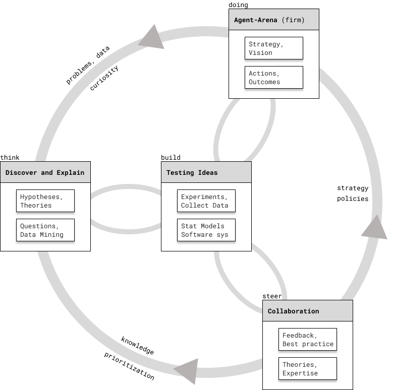

Scientific process is all you need
One method to rule them all
People doing analytics, machine learning, and applied statistics recognize the importance of methodology. They design processes and workflows for their domain of expertise, which helps them solve problems systematically. However, it is confusing for a beginner to see so many of them and decide which one to use for each particular application, as I show in the card below.
I claim that an adaptation of the scientific process which includes agency, can place each of these processes in its appropriate context and take into account actions and outcomes
For a very long time, I chose a process depending on the type of question and problem at hand. I still do, but I’m increasingly unease about it, as every well-intentioned author seems to make their own slight variations. You know the joke: “I decided to unify 10 existing standards – now we have 11”

Before I explain each box on the diagram1 and how are they connected, I’ll show some processes that you might encounter in literature and practice. Also, think how the scientific process you’re probably familiar with is encompassed by the diagram above: Observations – Hypotheses – Experiment – Data collection – Hypothesis testing – Communicating conclusions.
1 The diagram above is inspired by Berkeley’s “Understanding Science 101”
In data mining, machine learning, and analytics, you might encounter CRISP-DM (cross-industry process for data mining), KDD (knowledge discovery in databases), J. Tuckey’s EDA (exploratory data analysis), A. Fleischhacker’s BAW (business analyst’s workflow), H. Wickham’s tidyverse workflow, and C. Kozyrkov’s 12 steps to AI.
They are heavily focused on pattern recognition, finding inspiration and hypotheses from data (sometimes, in an model-driven way), and building predictive models. Despite their diferences, they all point to the same idea.
In statistical modeling and experiment design, you might know the stats 101 process for hypothesis testing. More sophisticated workflows are concerned with the whole process of modeling and study design, like C. Kozyrkov’s 12 steps of statistics, A. Gelman’s Bayesian Workflow, R. Alexander’s telling stories with data, and R. McElreath’s simulation-based model development.
All of the above attempt to iteratively develop statistical models (estimators) to answer scientific questions and to gain insight into the underlying causal processes of social science phenomena.
Out of all these processes, I found C. Kozyrkov’s 12 steps to AI to be extremely useful in predictive applications, 12 steps to statistics in designing A/B tests, and R. McElreath’s process when developing statistical models to draw causal conclusions.
Action and Agent-Arena
In order to make the diagram more specific, let’s take the example of a firm and think of it as an agent. At this level of analysis, we don’t need to consider the full implications of a complex adaptive system. Hopefully, the firm has formulated its mission, vision, has articulated a rough strategy to overcome obstacles and has set reasonable objectives.
Employees and leadership of the firm will try to make good decisions, develop capabilities in order to increase performance. In a happy and lucky case, these actions are coordinated, aligned with strategy and generate desired outcomes. Besides performance, we can also consider an increase in value added brought by improvements in its processes, products, and services.
The firm gathers data about its current and past state \(\{\mathcal{S}_t\}_{1:t}\), observes the environment \(\mathbfcal{O}_t\), and its actions \(\mathcal{A}_t\) influence the environment, and vice-versa. It also interacts with other agents in the network (be it customers, suppliers, manufacturers, government, the board, stakeholders, etc).
This perspective is pretty standard in AI research. We’ll see later in the course how we could also use it to tease out different sources of uncertainty.
I called this “element” in the bigger process an “agent-arena” relation, because we usually don’t consider the whole firm, but our framing depends on what point of view in the value chain we take. For example, the POW of a team responsible for conversion-rate optimization will have its own objectives, decisions, and data they care about \((\mathcal{S}, \mathcal{O}, \mathcal{A} | {POW} )\). Of course, there is a concern of alignment, of local optimization which results in suboptimal global outcomes – but this topic is outside the scope of our course.
In their book Algorithms for Decision Making, MIT Press - 2022, M. Kochenderfer, T. Wheeler, and K. Wray make a helpful classification of the sources of uncertainty, based on agent-environment interactions:
- Outcome uncertainty, as the consequences and effects of actions are uncertain. Can we be sure that an intervention works out? We can’t take everything into account when making a decision – it becomes combinatorialy explosive.
- Model uncertainty suggests we can’t be sure that our understanding, model as a simplification of reality is the right one. In decision-making, we often mis-frame problems and in statistics, well, choose the wrong model.
- State uncertainty means that the true state of the environment is uncertain, everything changes and is in flux. This is why statisticians argue we always work with samples
- Interaction uncertainty, due to the behavior of the other agents interacting in the environment. For example, competitive firms, social network effects.
We will focus very little the last aspect of uncertainty, but you have some tools to reason about it: game-theoretic arguments, ideas from multi-agent systems, and graph theory. I think it is an important dimension of reality, however, taking it into account in this course would make it incomparably more complicated and advanced.
Building and testing ideas
At the core of scientific process is experimentation, data collection, and testing of ideas – which results in evidence with respect to a hypothesis or theoretical prediction. For our purposes, we consider experimentation in its large sense, not just randomized control trials and highly-controlled experiments. By including statistical models, simulation, ML models; software systems, prototypes, and features – we can benefit from this self-correcting feedback loop not just in science, but in decision-making.
Let’s consider Agile principles and Shape-Up methodology for software development. I think that they fit well into our framework when we’ll sketch out the two remaining pieces
This means that inferential and causal statistical models are equally as important ways to test ideas. Moreover, the ultimate test is whether the recommended decisions based on modeling insights work well in practice. Meaning, we get better outcomes in the agent-arena, our problem space. Let’s see how testing of ideas interacts with other elements of our diagram:
- Agent-Arena
- our insights and recommendations can help inform actions
- after operationalization, we get feedback on how well it worked
- Collaborators
- we have to communicate our insights clearly and persuasively
- other people give feedback about the analysis / results and best-practices about how should we test our ideas
- Discovery and Explanation
- ideally, we don’t test a vague hypothesis, but a well-thought causal model
- our test results in stronger or weaker evidence for/against the explanation
- we can use simulation to validate that our statistical models work in principle, meaning we recover the estimand (unobservable quantity of interest)
Since the data comes from the real world, we will have to consider very carefully how it was collected and measured. This means that when we build models, we might need to learn new tools to correct for biased samples, non-response, missing data, measurement error, etc.
For some research questions, measurement and sampling is a complicated problem. This is why I’m trying to integrate them in this course.
Thinking, discovery and explainations
One can make a case that wisdom starts in wonder, and science with curiosity. For a long time, statistics classes were taking hypotheses and theories as given. Our field has caught up to scientists, in the sense of openness in how we gather inspiration.
Many books have been written about how theories are being developed, the role of curiosity, inspiration, observation, previous theories, evidence, etc.
Model-driven exploratory data analysis an pattern recognition have become acceptable ways to find inspiration and formulate hypotheses. I would argue that for most problems I encountered, this process was essential and this is the way in which a good analyst is extremely valuable. Note that with this power comes a lot of responsibility to not fool ourselfs, hence we’ll need discipline and guardrails.
You will probably agree that asking a good question and formulating, framing a problem well gets us “halfway” towards a solution. We can approach a research design data-first or question-first, but in practice it’s almost always a mix.
Speaking about business decisions, what I mean by theory is our current knowledge and understanding of the problem and domain. Thus, don’t get fooled by claims of “theory-free” AI and ML. The mere fact of selecting what to measure and what features to include in the model, involves human understanding and a judgement of relevance.
In the course we will try our best to ensure that statistical models are answering the right quantitative question, which we call an estimand. It might not be obvious why we worry about the underlying, unobservable, theoretical constructs and ways we could measure them. After all, we’re not doing quantitative psychology.
In my experience, sometimes it comes up explicitly and thinking this way is very helpful, for example: willingness to pay, customer satisfaction, engagement, brand loyalty and awareness, who can be convinced to buy via promotions, email fatigure, etc.
Steering and collaboration
Modern science, and science in general doesn’t happen in isolation. The same is true in firms and almost any other domain. I will not spill much ink in trying to convince you of the power of collaboration, since almost any problem which is complex enough can’t be tackled by a single individual.
In the context of this course, we’re thinking of collaboration with clients, stakeholders, experts, engineers, and decision-makers. A few outcomes of this collaboration are the strategy we mentioned at the beginning, policies, interventions, best-practices, feedback, and review. Collaboration informs what should we do, prioritize, build and test, and hypothesise / think about.
In the course you will see processes and workflows for experiment design (C. Kozyrkov’s 12 steps of statistics), causal inference (R. McElreath’s owls and DAGs), and machine learning (C. Kozyrkov’s 12 steps of ML, Google’s People+AI).
Don’t try to memorize them, but go back to this diagram of the scientific process and locate different steps of the workflow. For example, leaving aside a test dataset in machine learning is a way to assess and approximate how well a trained and chosen model generalizes beyond training data.
Simulating synthetic data from a causal process model in order to validate if a statistical model can draw correct inferences about the estimand can be considered an experiment, although, one which lives in pure theory, until we apply it to real data. This iterative process lives at the intersection of asking questions, building theories and testing ideas.
12 Steps of Machine Learning
By now, I introduced the bare minimum of motivation, formalism, and practices of Machine Learning for you to get by. However, we need a structured approach to tackle real-world problems with ML models. The methodology I like most is articulated by Cassie Kozyrkov, (ex) Chief Decision Scientist at Google. 2
2 Cassie Kozyrkov - Making friends with machine learning, full course. It is 6 hours which will serve you during the entire carreer
- Present the 12 steps with representative examples of classification and regression
- Is the ML project feasible? If yes, is it a good idea?
- Split your damn data. Cross-Validation and hyperparameters. Pitfalls
- Similarities with CRISP-DM, tuckey’s EDA, and tidy modeling
I like this Kaggle challenge and dataset, because of how realistic and open-ended it is. You can keep it simple, with out-of-the-box models, or build some highly customized ML pipelines.
It also has data which requires a combination of different approaches to feature engineering. It is messy enough that we have to justify how we deal with those missingness patterns and weird data points. Those modeling decisions will have an impact on model performance.
12 Steps of Statistics. A/B Testing Scheme
I assume you have been working on Module 2 (Fundamentals of Statistics and Probability) in parallel, so that we can get to a point where we discuss the practical and methodological aspects of A/B testing and randomized experiments.
In this lecture I bridge the gap between the theory/fundamentals and practice. We will see how an end-to-end process of experiment design looks like. In the end, you will learn how to make justified choices in how you set-up and run an experiment.
Marketing is one area of online businesses which heavily relies on randomized experiments and A/B tests. Firms try to make the most out of their advertisement spending (customer acquisition), by testing changes in user experience, promotion, merchandising, to convince a larger proportion of them to buy the product or subscribe (conversion rate).
Read this end-to-end example, which takes a lot of attention and care into verifying potential pitfalls. If you need other perspectives about what can go wrong, you can refer to: HBR article, 8 pitfalls and solutions, A/A tests, and user interference
- Before jumping into the hypothesis testing, we should carefully ask whether we need an experiment at all. 3 Maybe we want to explore or predict?
- Default action is one of the most important ideas in statistics.
- What is a statistical hypothesis anyways? How does it relate to the original question?
- Make sure you define the minimal effect size of interest/relevance
- Type 3 errors: be careful what is the question you really ask of your test
- Watch the 12 steps to statistics by Cassie Kozyrkov for a methodology of how to perform experiments in business settings. For a more traditional exposition, check out Poldrack’s Chapter 9.
- One of the most difficult aspects in practice is metric design, since we deal with tradeoffs so often. An useful way to think about properties of good metrics is described in this paper, STEDII. Also see this example discussing sensitivity, stability, and directedness.
3 Read Cassie Kozyrkov’s article to recognize when “not to waste your time with statistics”. You can also watch this video. You can also see her full, short lecture for Google employees.
Research methods
Besides technical prerequisites, there is a list of concepts and ideas from research design, which can be helpful in practice, but are often not part of statistical curriculum. I highly recommend A. Zand Scholten’s introductory course on Quantitative Methods. It is worth to invest a bit of time to get familiar with the following:
Taken in isolation, topics like measurement and sampling are very abstract. Therefore, they have to be integrated into the case-studies whenever they bring added value. This is not easy, so .. work in progress
- Measurement is especially relevant and tricky in social science. Sometimes, we do not measure what we think we do (underlying construct). For measuring abstract things like happiness or personality, we need to dive into scales, instrumentation, operationalization, validity, and reliability.
- Sampling isn’t limited to simple random samples, as these rarely occur in practice. We need to be aware what tools exist so that we can generalize to the population of interest. For example, weighting and post-stratification.
- Threats to validity, including confounds, artifacts, and biases. On the one hand we use statistics as a guardrail against foolishness, on the other hand there a lot of the same problems that can compromise our study.
- Reproducible research and literate programming has become a de-facto standard in the data science world. We have amazing tools right now, but it’s still not easy to achieve end-to-end reproducibility and automation.
- Academic writing is an important skill, even in businesses. Writing is both a way of thinking, problem-solving, and communication. In my opinion, the structure of a scientific paper is very helpful to crystalize your ideas.
Business Analysts’ Workflow
This is a lot to take in! But there is one more thing to explore – a brilliant idea from a course by Dr. Adam Fleischhacker 4, which has a very similar philosophy, but is much more established and thought out, with many practical examples. Here is what he has to say in the course intro:
4 Adam Fleischhacker - Introduction to Business Analytics: Intro to Bayesian Business Analytics in the R Ecosystem
“You will translate real-world scenarios into both mathematical and computational representations that yield actionable insight. You will then take that insight back to the real-world to persuade stakeholders to alter and improve their real-world decisions.”
Dr. Fleischhacker makes an illuminating distinction between the business analyst’s workflow and a machine learning workflow, and sets up the normative criteria which make it successful. In our course, his workflow falls under the discussions related to causal inference. One interesting thing to note, is the convergence in the approach of an extremely diverse set of people: Cassie Kozyrkov, Vincent Warmerdam, Adam Fleischhacker, Richard McElreath, Andrew Ng – all coming from different backgrounds and activating in different environments and domains.

Let’s briefly review those normative criteria of this workflow. It might be a confirmation bias on my part, but the fact that these are present in the current course in one way or another, means I stumbled upon them by trial-and-error and painful mistakes:
- Outcome-focused: What is the point of fancy models, if we don’t achieve good or desired outcomes? If I was implying it so far, for the rest of the course we’ll ask this explicitly every time we tackle a business problem.
- Strategically-aligned: “Not all outcomes are created equal. Companies seeking to capture market share might increase expenses to aid market capture. Companies seeking to be cost leaders might leave some customers unsatisifed to keep expenses low. So a one-size-fits-all approach to defining good outcomes is ill-advised.”
- Action-oriented: We insisted so much on insights influencing, driving actions and decisions that there is little to add here. The remaining question is how can we communicate and articulate it well to convince decision-makers and stakeholders.
- Computationally Rigorous: Refers to the know-how, the engineering in the trenches. Even though we’ll spend most of the time in the frequentist land – I think the future is at the intersection of Causality and Bayesian Inference.
- Taking it one step further, this kind of workflow should be reproducible and (mostly) automated. This is why we’ll explore an ecosystem of software engineering tools and practices in the labs.
- Ideally, given in the hands of our clients/users in form of a full stack data app. This is where we take off our consulting hat and start building software products.
This is in contrast with a predictive, machine learning workflow, which we called before “workhorse models”, a “hammer” for which everything is a nail. We got a taste of its power and limitations, and tried to articulate which are appropriate applications for ML. This course gives equal attention to ML and Causality, due to the prevalence of use-cases from which we can learn from data to make tons of decisions at scale and high frequency.